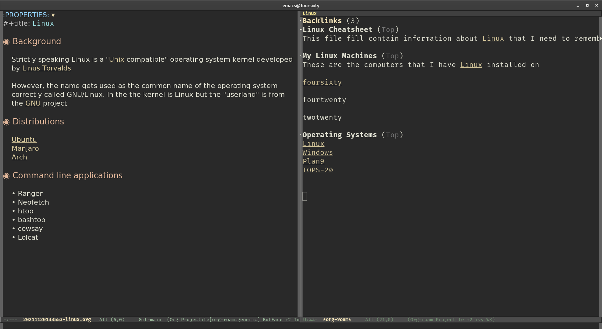

org-roam
As much as I liked to use Obsidian for note taking I did have problems with it, the main one being tables. I tend to use a lot of tables in my notes and the table handling in Markdown is not that flexible. I much prefer the table handling in org-mode under emacs and so have returned to using this for my note taking. However I do like the Zettelkasten concept and so was happy to find org-roam. Org-roam is an extension to org-mode that provides much of the functionality of Obsidian but based on org-mode markup rather than Markdown.
Org-roam provides linking (using normal org-mode links), back links and a rudimentary "Graph View". It uses an SQLite database as a back end to speed up searching for notes. This mixture of org-mode and Zettelkasten provides the "Best of Both Worlds" note taking solution for me.
 org-roam Screenshot
Above is a screenshot showing an org-roam note on the left and the back links window on the right.
Although I will continue to research and try out other note taking systems for now org-roam is my note taking system of choice.